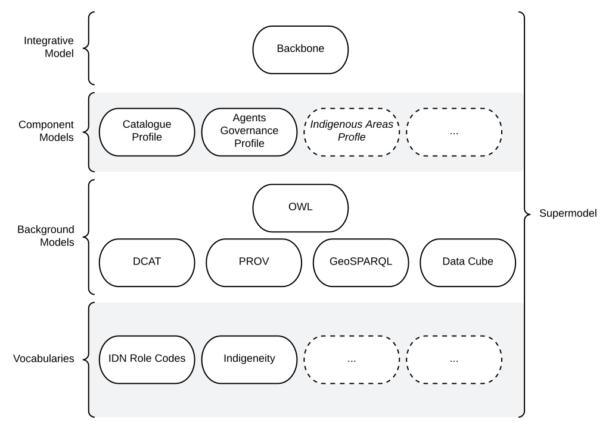

The Supermodel

Introduction
This "Supermodel" is a multi-part model that is used to coordinate expressions of data from multiple systems within the Indigenous Data Network (IDN). Specifically, this model allows for:
- integration of data across IDN systems
- alignment of IDN data with other data systems
- for example, Geoscience Australia's FSDF data
- delivery of reference vocabs & models for indigenous data holders external to the IDN
The major parts of this Supermodel are shown in Figure SMO above.
Related Supermodels
This Supermodel relates to several other Supermodels in existence including Geoscience Australia's FSDF data referenced above. The table below gives some details.
| Supermodel | Relationship |
|---|---|
| Foundational Spatial Data Framework Supermodel | The FSDF Supermodel was created by Geoscience Australia to integrate multiple foundational spatial datasets within Australia. It specifies both a structure for spatial data and particular fundamental objects to join datasets with, such as authoritative boundaries for Australia and the states. This supermodel adopts the FSDF Supermodel ways of working for spatial data |
| Spatial Information Queensland's Supermodel | A Supermodel for Queensland's state-managed spatial information, including Place Names and other administrative area This supermodel will likely reuse not just SIQ Supermodel models and vocabularies but perhaps instance data, such as specific place names. |
Supermodel Structure
The structure of this Supermodel follows the conventions of the Supermodel Model defined at:
Each of the main parts of this Supermodel is listed on the left.
Individual data models - called Component Models here - are given within the Component Models Section.
Modelling Conventions
All of the models within this Supermodel are visualised with informal OWL diagrams. These are diagrams that represent the Classes, Properties and Axioms of the Web Ontology Language with the elements shown in Figure K below.

Technical Assets
All parts of this Supermodel are presented here in human-readable form (documentation) and also presented in machine-readable form for data validation and schema implementation. The machine-readable form for all parts is Resource Description Framework (RDF) files. Each part of this model's human-readable form provide links to the machine-readable form and the machine-readable form are also available in standard Linked Data ways when accessing a Supermodel part via its individual identifier, i.e. you can request RDF for the Catalogue Profile Component Model via the following command using the Catalogue Profile's identifier:
~$ curl -L -H 'Accept: text/turtle' https://w3id.org/idn/def/cp
This command requests the RDF 'Turtle' format form of the Catalogue Profile.